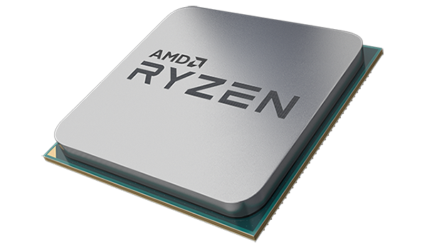

______________________________
CES 2018: Corsair Unveils New Coolers
Corsair has put a lot of effort into their revamped AIO coolers, namely the H150i PRO with a 360mm radiator and the H115i PRO equipped with a 240mm radiator. They have really gone the extra mile trying to make the new PRO series the quietest AIO on the shelf. Both coolers come with an updated, compact pump head. It’s quieter than previous models with precise control for quieter start-ups and has the full Corsair RGB logo and RGB ring on the face.Keyboard
The K63 wireless mechanical gaming keyboard, which is a CES 2018 innovation award honoree. It’s equipped with Cherry MX Red mechanical key switches and connects via fast 1 ms 2.4GHz gaming optimized wireless, low latency Bluetooth or directly with a USB cable. It also boasts a 75-hour rechargeable battery and LED backlighting.Mouse
Corsair also rolled out a new gaming mouse design which incorporates the same wireless technology. There are two variants of the mouse, the Corsair Dark Core RGB with a comfortable contoured shape that’s customizable by two interchangeable magnetic side grips to tailor the fit to your hand. Equipped with a 16,000 DPI optical sensor, the same wireless, Bluetooth and direct connect features as the K63 keyboard and customizable RGB. The Dark Core RGB also features nine programmable buttons and a rechargeable battery with 24-hours of gaming time before it need to be topped up.
______________________________
CES 2018: New AMD Ryzen+
AMD announced that their upcoming Ryzen/Vega based APUs and Ryzen+ desktop CPUs will be available in early 2018. Last year at this time AMD was preparing to launch the initial Ryzen CPU based on a newly designed “ZEN” core, promising big leaps in IPC and power savings over the previous generation. They definitely delivered on that promise albeit with a few growing pains. It has taken most of the last year to work out the kinks but that can be expected with a fully overhauled platform.Zen+
The upcoming Ryzen+ is still based on the original ZEN core with an optical shrink from 14 nm to 12 nm. Much is still unknown about the second Zen core except that it’s supposed to be available for desktop in April this year.AMD is also working on Precision Boost 2 technology which in their words “seeks highest possible frequency from environmental inputs and opens new boost opportunities for real-world workloads.”
